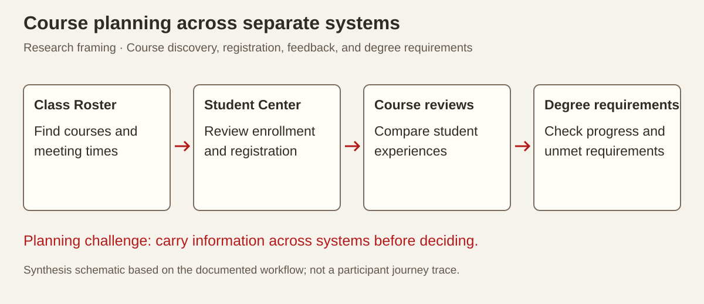

03 / ACADEMIC PLANNING · REDESIGN CONCEPT
Cornell Class Roster
Making course planning less guesswork by connecting course discovery and degree progress.
01 / OVERVIEW
Informed academic decisions in one place.
I helped redesign course discovery and degree planning for Cornell students, connecting requirements, reviews, GPA data, and scheduling.
Cornell Class Roster provides course listings; this concept extends the experience from finding a class to deciding whether it fits an academic plan. Concept project, not affiliated with Cornell.
02 / PROBLEM / USER CHALLENGE
Finding a course is easy. Knowing whether it fits is hard.
Students cross-check Class Roster, Student Center, reviews, and degree requirements. Each switch adds information to remember before deciding what to take.
Research foundation
We interviewed 9 stakeholders: 3 professors, 3 students, and 3 registrars. The research brought teaching, planning, and registration perspectives into the design.
Reframing
The design focus shifted from course search to decision support: which requirement remains unmet, what a course contributes, and whether it fits the semester.

03 / SOLUTION
Connect each course to an academic goal.
Four connected features address different parts of the planning decision. The value described below is intended; usability testing is still in progress.
Degree Tracker
- PROBLEM
- Students manually cross-check courses against requirements.
- DECISION
- Show degree progress, requirement matches, and double-counting warnings within course selection.
Course Reviews
- PROBLEM
- Course descriptions do not explain student experience.
- DECISION
- Keep experience, difficulty, and workload feedback beside course details.
Course details with student reviews and a view-all-reviews action.
GPA Data
- PROBLEM
- A grade chart without context is hard to interpret.
- DECISION
- Place distributions beside the course with source, coverage, and explanatory labels.
Distribution view with source, term coverage, and explanatory labels.
Schedule Planner
- PROBLEM
- A useful course may not fit the semester schedule.
- DECISION
- Connect saved courses, schedule planning, and degree progress while distinguishing saving from planning.
Favorites and planned courses in a semester view.
04 / IMPACT / OUTCOME
A prototype and a study in progress.
Deliverables include the Figma prototype and a 15–20 minute think-aloud usability protocol. We selected 9 students because students are the primary users; findings are not yet available.
- Find: filter 5000-level INFO courses and open INFO 5125.
- Interpret: locate reviews and GPA data, then explain what they mean.
- Plan: save a course, add INFO 5055 to the planner, and check degree progress.
TODO: Add verified task observations, design changes, and outcomes after testing and analysis.
Observed behavior and before-and-after screens once the study is complete.
05 / OPPORTUNITIES / TARGET USERS
Design for students; verify the rules behind the guidance.
Students are the primary users. Professors and registrars contribute perspectives on academic choices and registration constraints.
Next, validate requirement matching, distinguish completed from planned credits, and explain double-counting warnings against the relevant degree rules. These checks are necessary before students rely on the guidance.
06 / REFLECTION
Confidence requires an explanation.
A progress total is less useful if a student cannot tell why a course counts. The design should expose the reasoning behind matches and flag uncertainty.
Use the ongoing study to prioritize comprehension failures over cosmetic preferences. Actual findings and iterations will be added after analysis.